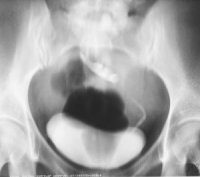

You are here: Urology Textbook > Kidneys > Simple renal ectopia
Simple Renal Ectopia
Definition of Simple Renal Ectopia
Simple renal ectopia is the abnormal position of the kidney outside of the renal fossa in cranial or caudal direction.
Location (from cranial to caudal):
- Thoracic kidney: position of the kidney above the diaphragm in the posterior mediastinum. The kidney is separated from the pleural cavity by a thin membrane in continuity of the diaphragm.
- Normal kidney position: in the renal fossa.
- Lumbar position: location in the iliac fossa.
- Pelvic kidney [fig. tomography of a pelvic kidney]: position of the kidney below the aortic bifurcation.
|  |
Renal ectopia: urography (with tomography) reveals a left-sided pelvic kidney. With kind permission of Dr. G. Antes, Kempten. |
Epidemiology of simple renal ectopia:
1:500 to 1:1200, slightly more often on the left side.
Causes (Etiology) of Renal Ectopia
Renal ectopia is caused by a disorder of renal ascension, genetic or teratogenic causes are probable due to frequent coexisting genital abnormalities. The renal pelvis is often anterior to the renal parenchyma, since renal rotation is also disturbed. The vascular supply of the ectopic kidney is abnormal, often with several vessels from the distal aorta or iliac vessels.
Signs and Symptoms of Renal Ectopia
Urological complications:
The most common problem is hydronephrosis, followed by vesicoureteral reflux or nephrolithiasis.
Malformations of the genital organs:
In 15%, malformations of the genital organs are present. In women: vagina and uterine malformations. In men: cryptorchidism, duplicate urethra and hypospadia.
Treatment of Renal Ectopia
Treatment is only necessary for symptoms.
| Supernumerary kidney | Index | Crossed renal ectopia |
Index: 1–9 A B C D E F G H I J K L M N O P Q R S T U V W X Y Z
References
 Deutsche Version: Einfache Nierenektopie
Deutsche Version: Einfache Nierenektopie